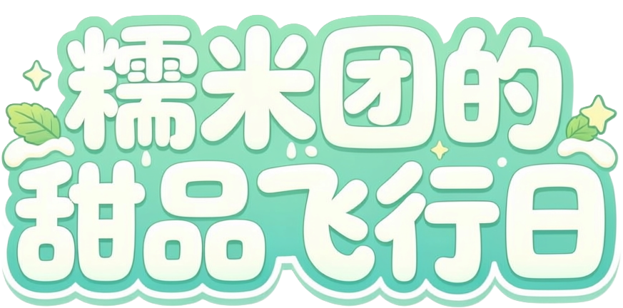
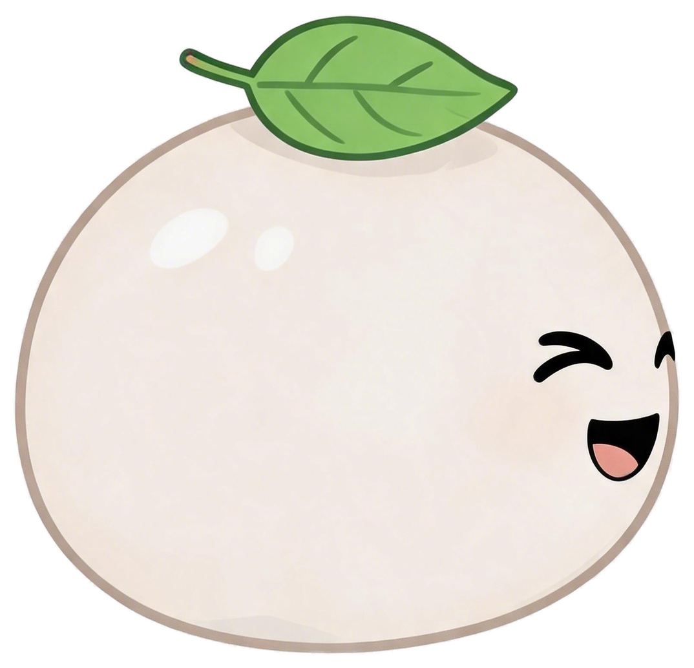
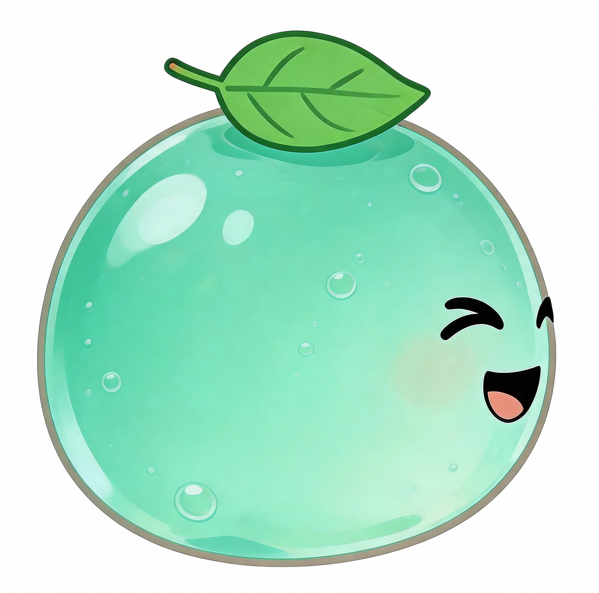
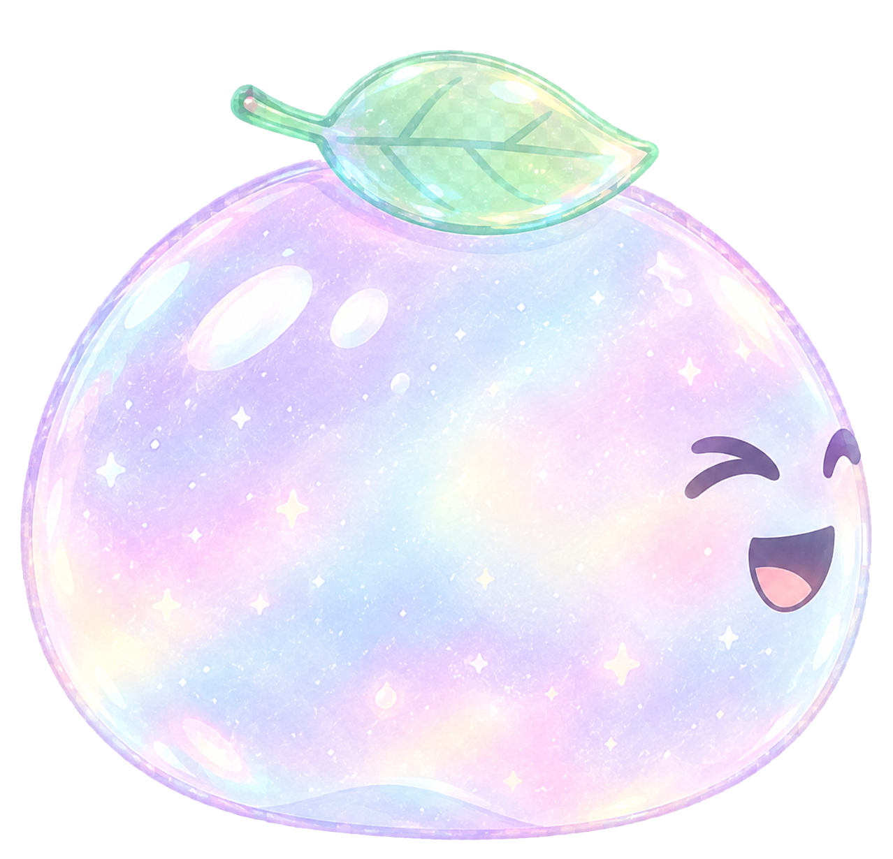

糯米团的甜品飞行日
选择你的飞行伙伴
糯米团 · 甜品飞船
选择皮肤系列



点击卡片即装备整个皮肤系列；未解锁系列收集对应甜品达标后自动解锁
选择关卡
甜品图鉴
甜品玩偶伙伴
在关卡中收集三只甜品玩偶，它会跟随你 5 秒并提供辅助效果；期间吃到新的玩偶会立即替换并重新计时
关于
《糯米团的甜品飞行日》
这是一款 2D 治愈休闲飞行小游戏。操控糯米团穿越 薄荷花园 与 极光冰境 两大甜品世界，收集甜品、解锁皮肤，在轻松梦幻的天空中开启属于你的飞行冒险。
制作人MJZ
游戏策划MJZ
美术设计MJZ × AI
程序开发MJZ × AI
游戏版本Ver.1.0「初夏启程」
下一片云，会藏着什么甜品呢？ ☁️🍬
Score: 0
Lives: 3
5
游戏结束
本次得分: 0
收集甜品: 0 个
新发现甜品: 无
最高分: 0新纪录!
设置
音乐
音效
BGM 音量
90%
音效音量
90%
本地存档
音量与开关会自动保存到本地，下次打开自动恢复
游戏完成！
精彩的CG动画即将播放...